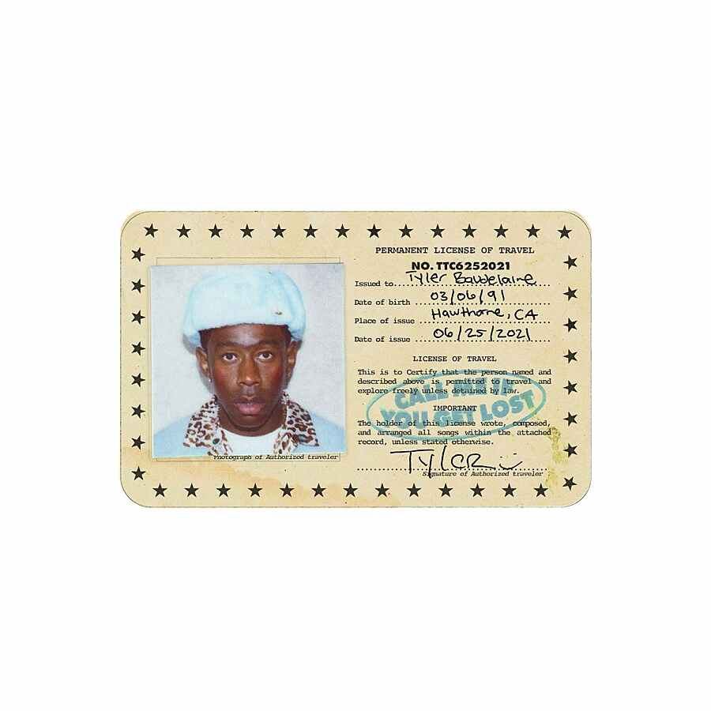
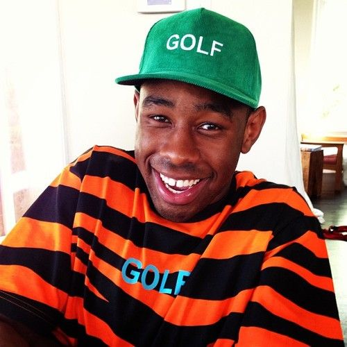
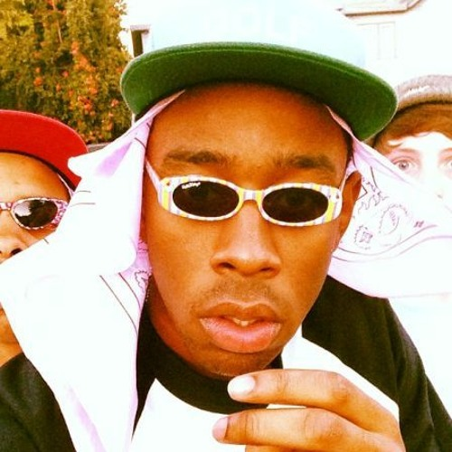
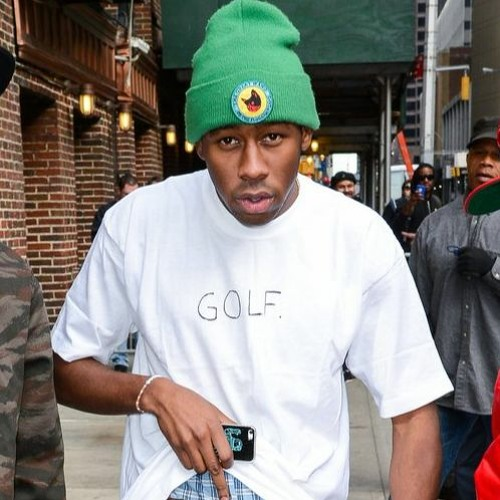

|
|||
| Inicio | Biografia | Logros | Contacto |
Tyler, the Creator |
|||
|  | |||
| Tyler Gregory Okonma, conocido artísticamente como Tyler, the Creator, es un rapero, compositor, productor, actor, escritor, director y diseñador estadounidense de origen canadiense. | |||
|  |  |  | |
| Todos los Derechos Reservados Andrea González 2022 © | |||